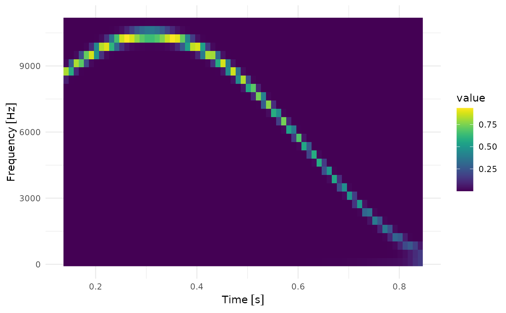

Performs a fast continuous wavelet transform on long sequences by sequentially processing junks of the input signal and keeping only low-resolution output data to preserve memory. This is only useful for very long signals whose output does not fit into the available memory as a whole. It should not be used on short signals since boundary artefacts are automatically discarded (and those potentially dominate for short signals).
Arguments
- signal
Real-valued time series. The time steps are assumed to be evenly spaced.
- sample_freq
Sampling rate of input time series. This number primarily establishes a connection to physical units which is used in other frequency definitions as well as the units of the output data. Expects either a value with frequency units, generated with
u(), or a pure number, in which case it is interpreted in units of 'Hertz'.- n_freqs
Number of frequency bins generated by the CWT. The frequencies are linearly distributed. Computation time increases when raising the number of frequency bins.
- time_resolution
The time resolution in physical units, generated by
u(), or a pure number, which is interpreted in unit of seconds. Memory consumption is directly related to that. Can not be smaller than the time resolution of the input signal.- freq_begin, freq_end
Optionally specifies the frequency range
[freq_end, freq_begin]. If not specified the maximal meaningful frequency range, depending on the input signal, is taken. A frequency-valued number, generated withu(), or a pure number, that is interpreted in units of 'Hertz'.- freq_scale
Should the frequency scale be linear or logarithmic? "linear" / "log" for linear / logarithmic.
- sigma
Sets a dimensionless parameter modifying the wavelet spread which in the time-domain is roughly given by \(\Sigma_t \sim \sqrt{2} \frac{\sigma}{f}\). Changing this parameter adjusts the time/frequency uncertainty balance. Defaults to 1. Larger (lower) value of sigma corresponds to a better (worse) frequency resolution and a worse (better) time resolution.
- max_batch_size
The maximal batch size that is used for splitting up the input sequence. This limits the maximal memory that is used. Defaults to roughly 1GB, being conservative and taking into account that R might make copies when further processing it. The actual batch size depends on the requested
time_resolution.- n_threads
Number of threads used by the computation, if supported by your platform. Defaults to 2 threads (to accomodate CRAN requirements).
- progress_bar
Monitoring progress can sometimes be useful when performing time consuming operations. Setting
progress_bar = TRUEenables printing a progress bar to the console. Defaults toFALSE.
Value
The spectogram, a numeric real-valued matrix with dimensions roughly
dim ~ c(length(signal) * time_resolution * sample_freq, n_freqs).
The exact length of the output depends on boundary effect details.
This matrix is wrapped into a S3-class fcwtr_scalogram so that plotting and
coercion functions can be used conveniently.
Details
In case of input sequences that exceed the a certain size, the output
sequence will not fit into the local memory and the fcwt cannot be
performed in one run.
For instance, in case of processing a song of 10 minutes length (assuming
a sampling rate of 44100 Hz), the size of the output vector is
10 * 60 seconds * 44100 Hz * nfreqs * 8 bytes,
which for e.g. nfreqs = 200, equals ~ 42 GB, hence
nowadays already at the limit of the hardware of a modern personal computer.
In cases where the required output time-resolution is smaller than the time
resolution of the input signal, one can perform the fcwt() and reduce the
output size by averaging.
(The input signal time resolution can in general not be reduced since
high-frequency information would get lost.)
This function splits up the input sequence into batches, processes each batch separately, reduces the time resolution, and adds the outputs together.
Attention: In contrast to fcwt() boundary artefacts are automatically removed,
so some high frequency information at the beginning and the end of the
sequence is lost. (The amount depends on the minimal frequency captured min_freq.)
Examples
res <-
fcwt_batch(
ts_sin_sin,
sample_freq = 44100,
freq_begin = 100,
freq_end = 11000,
n_freqs = 30,
sigma = 10,
time_resolution = 0.01
)
plot(res)
